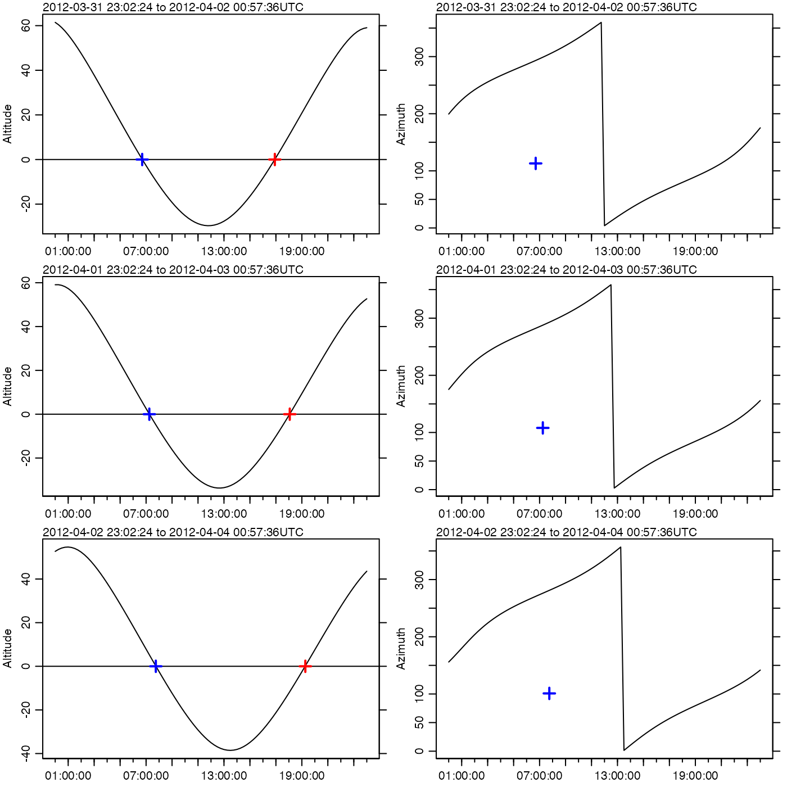

The calculations are based on formulae provided by Meeus (1982), primarily
in chapters 6, 18, and 30. The first step is to compute sidereal time as
formulated in Meeus (1982) chapter 7, which in turn uses Julian day computed
according to as formulae in Meeus (1982) chapter 3. Using these quantities,
formulae in Meeus (1982) chapter 30 are then used to compute geocentric
longitude (\(lambda\), in the Meeus notation), geocentric latitude
(\(beta\)), and parallax. Then the obliquity of the ecliptic
is computed with Meeus (1982) equation 18.4. Equatorial coordinates (right
ascension and declination) are computed with equations 8.3 and 8.4 from
Meeus (1982), using eclipticalToEquatorial(). The hour angle
(\(H\)) is computed using the unnumbered equation preceding Meeus's
(1982) equation 8.1. Finally, Meeus (1982) equations 8.5 and 8.6 are used
to calculate the local azimuth and altitude of the moon, using
equatorialToLocalHorizontal().
moonAngle(t, longitude = 0, latitude = 0, useRefraction = TRUE)
Arguments
| t | time, a POSIXt object (converted to timezone |
|---|---|
| longitude | observer longitude in degrees east |
| latitude | observer latitude in degrees north |
| useRefraction | boolean, set to |
Value
A list containing the following.
timeazimuthmoon azimuth, in degrees eastward of north, from 0 to 360. Note: this is not the convention used by Meeus, who uses degrees westward of South. Here, the convention is chosen to more closely match the expectation of oceanographers.altitudemoon altitude, in degrees from -90 to 90.rightAscensionin' degrees.declinationin degrees.lambdageocentric longitude, in degrees.betageocentric latitude, in degrees.diameterlunar diameter, in degrees.distanceearth-moon distance, in kilometers.illuminatedFractionfraction of moon's visible disk that is illuminated.phasephase of the moon, defined in equation 32.3 of Meeus (1982). The fractional part of which is 0 for new moon, 1/4 for first quarter, 1/2 for full moon, and 3/4 for last quarter.

Alternate formulations
Formulae provide by Meeus (1982) are used
for all calculations here. Meeus (1991) provides formulae that are similar,
but that differ in the 5th or 6th digits. For example, the formula for
ephemeris time in Meeus (1991) differs from that in Meeus (1992) at the 5th
digit, and almost all of the approximately 200 coefficients in the relevant
formulae also differ in the 5th and 6th digits. Discussion of the changing
formulations is best left to members of the astronomical community. For the
present purpose, it may be sufficient to note that moonAngle, based
on Meeus (1982), reproduces the values provided in example 45.a of Meeus
(1991) to 4 significant digits, e.g. with all angles matching to under 2
minutes of arc.
References
Meeus, Jean, 1982. Astronomical formulae for calculators. Willmann-Bell. Richmond VA, USA. 201 pages.
Meeus, Jean, 1991. Astronomical algorithms. Willmann-Bell, Richmond VA, USA. 429 pages.
See also
The equivalent function for the sun is sunAngle().
Other things related to astronomy:
angle2hms(),
eclipticalToEquatorial(),
equatorialToLocalHorizontal(),
julianCenturyAnomaly(),
julianDay(),
siderealTime(),
sunAngle(),
sunDeclinationRightAscension()
Examples
library(oce) par(mfrow=c(3,2)) y <- 2012 m <- 4 days <- 1:3 ## Halifax sunrise/sunset (see e.g. https://www.timeanddate.com/worldclock) rises <- ISOdatetime(y, m, days,c(13,15,16), c(55, 04, 16),0,tz="UTC") + 3 * 3600 # ADT sets <- ISOdatetime(y, m,days,c(3,4,4), c(42, 15, 45),0,tz="UTC") + 3 * 3600 azrises <- c(69, 75, 82) azsets <- c(293, 288, 281) latitude <- 44.65 longitude <- -63.6 for (i in 1:3) { t <- ISOdatetime(y, m, days[i],0,0,0,tz="UTC") + seq(0, 24*3600, 3600/4) ma <- moonAngle(t, longitude, latitude) oce.plot.ts(t, ma$altitude, type='l', mar=c(2, 3, 1, 1), cex=1/2, ylab="Altitude") abline(h=0) points(rises[i], 0, col='red', pch=3, lwd=2, cex=1.5) points(sets[i], 0, col='blue', pch=3, lwd=2, cex=1.5) oce.plot.ts(t, ma$azimuth, type='l', mar=c(2, 3, 1, 1), cex=1/2, ylab="Azimuth") points(rises[i], -180+azrises[i], col='red', pch=3, lwd=2, cex=1.5) points(sets[i], -180+azsets[i], col='blue', pch=3, lwd=2, cex=1.5) }